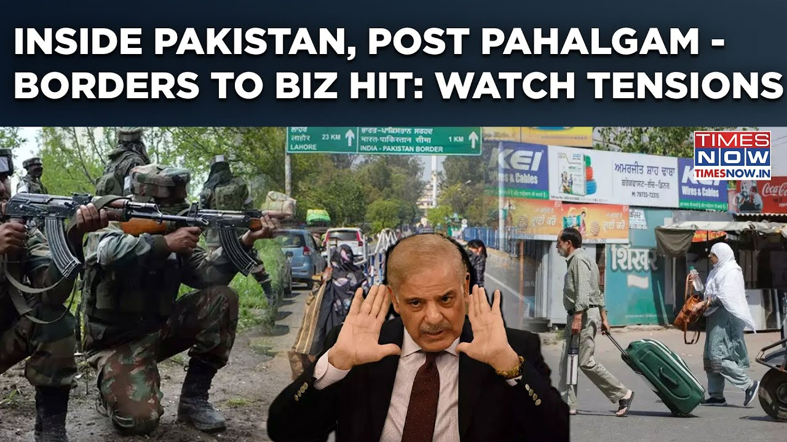

更多有意思的英语学习视频，请到B站Global每日双语简报！
【帕哈尔加姆复仇：巴基斯坦境内——袭击后边境至商业紧张，印度的“印度河”反击】
Summary: Both are major nuclear powers, but atomic war would devastate both sides. Neighbors cannot change each other, and realities must be accepted. A visa dispute arises amid tensions, while historical conflicts highlight the need to protect shared resources like water. Dialogue is urged to address terrorism and poverty, as economic instability grows due to war fears.
摘要： 双方都是核大国，但原子战争将摧毁彼此。邻国无法改变对方，必须接受现实。紧张局势中爆发签证纠纷，而历史冲突凸显保护水资源等共享资源的必要性。呼吁通过对话解决恐怖主义和贫困问题，战争恐惧导致经济不稳定。

⏱️ Estimated Reading Time: 3 min
Both are major nuclear powers.
双方都是核大国。
But if atomic bombs are exploded, people on both sides will be destroyed.
但如果原子弹爆炸，双方人民都将被毁灭。
We cannot transform our neighbours, neither can they transform us, nor can we.
我们无法改变邻居，他们也改变不了我们，我们也不行。
Both are a reality in their own places.
双方都存在于各自的现实中。
Those realities must be accepted.
这些现实必须被接受。
I have a visa sir.
先生，我有签证。
At least get the visa.
至少拿到签证。
The visa should be stopped.
应该停止签证。
Stop it.
停下。
Wait, I will give it to you.
等等，我会给你。
You come out.
你出来。
[MUSIC] Take it easy [MUSIC]
[音乐] 放轻松 [音乐]
I had a 45-day visa.
我有45天的签证。
I got this just today.
我今天才拿到。
I have to leave in a week.
我必须在一周内离开。
I have been here for six days because of this accident.
因为这次事故，我已经在这里六天了。
We just ran away very quickly.
我们刚刚很快逃走了。
I have come after just 15 years.
我时隔15年才来。
After 15 years and six days we will go.
15年零六天后我们会走。
And Sindh Taas Maida should remain as it is.
信德塔斯麦达应该保持现状。
This has remained intact even in wars.
即使在战争中它也完好无损。
It has remained intact even in the wars of 1965, 1971 and 1999.
它在1965年、1971年和1999年的战争中依然完好。
This must be maintained because water is a basic necessity and it cannot and should not be used as a weapon or a policy tool.
这必须维持，因为水是基本需求，不能也不应被用作武器或政策工具。
Atomic bombs are exploded, people on both sides will be destroyed.
原子弹爆炸，双方人民都将被毁灭。
No one will survive.
无人能幸存。
So, for the sake of humanity it is necessary that a dialogue should start between the two countries and a real and honest solution should be found to this issue of terrorism so that there can be peace in this matter.
因此，为了人道主义，两国必须开始对话，并找到针对恐怖主义问题的真实且诚实的解决方案，以实现和平。
More than 40-42% of the people in this area live below the line of poverty.
该地区超过40-42%的人生活在贫困线以下。
[Music] We have had this information for some days that his foreign masters are pushing him to enter Pakistan as soon as possible and do some activity there.
[音乐] 我们几天前得知，他的外国主子正催促他尽快进入巴基斯坦并在那里活动。
[Music] If we talk about the losses, aunty, see, the stock markets of both India and Pakistan have been disturbed because due to the war, there is a danger that as long as there are talks, there is a danger, there is pressure in it, so investors are a bit dependent and as time goes by, as soon as their decisions come from both sides, then our market moves accordingly.
[音乐] 谈到损失，阿姨，你看，印巴股市都受到干扰，因为战争带来危险，只要谈判持续就有危险和压力，投资者有些依赖，随着时间的推移，一旦双方做出决定，我们的市场就会相应变动。
No Tumhi [Applause] [Music]
不，图米 [掌声] [音乐]